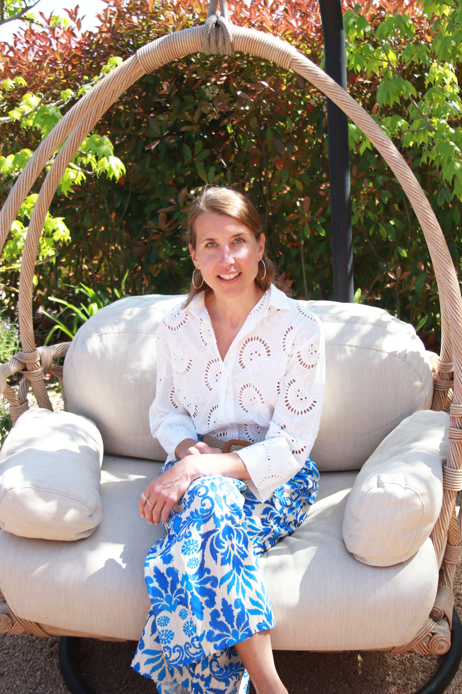
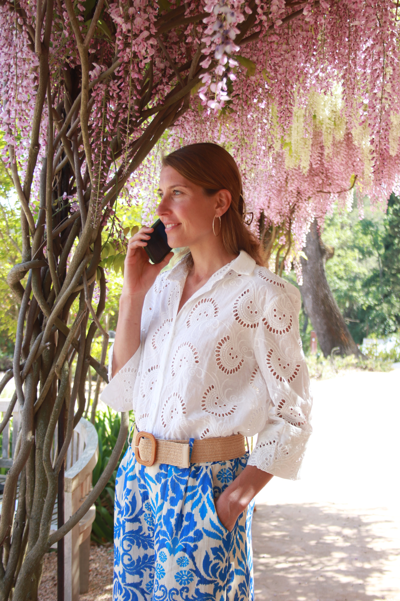

Ständig müde – und du fragst dich,
woran es liegen könnte?
Finde mit dem kostenlosen Energie-Selbsttest heraus, in welchem von 5 Bereichen bei dir die meisten Hinweise zusammenkommen – und erhalte im Anschluss deine persönliche Auswertung.
Schlaf · Blutzucker · Fette · Stress · Verdauung
- ✓ 20 kurze Fragen – ca. 2–3 Minuten
- ✓ Dein persönlicher Energie-Typ
- ✓ Du erfährst im Anschluss, welcher Energie-Typ du bist – inklusive passender Tipps, die du direkt in deinem Alltag umsetzen kannst
Kostenlos · unverbindlich · Ergebnis im Anschluss
Du schläfst genug – und bist trotzdem müde?
Vielleicht wachst du morgens schon erschöpft auf. Am Nachmittag kommt das nächste Tief. Die Konzentration lässt nach oder dir fehlt für ganz normale Dinge einfach die Energie.
Du versuchst früher ins Bett zu gehen, achtest auf deine Ernährung oder greifst zum nächsten Kaffee – aber so richtig verändert sich nichts.
Und irgendwann fragst du dich:
Warum bin ich eigentlich ständig so müde?
Müdigkeit ist nicht gleich Müdigkeit. Unterschiedliche Faktoren können beeinflussen, wie energiegeladen du dich im Alltag fühlst.
Genau hier setzt der Energie-Selbsttest an.
5 Bereiche. 20 Fragen. Deine persönliche Auswertung.
Der Energie-Selbsttest betrachtet fünf Bereiche, die mit deinem Energielevel zusammenhängen können:
Schlaf
Blutzucker
Fette
Stress
Verdauung
Der kostenlose Energie-Selbsttest zeigt dir, welche Bereiche möglicherweise mit deiner Müdigkeit zusammenhängen.
In nur 2–3 Minuten findest du deinen Energie-Typ heraus und bekommst direkt passende Tipps, die du im Alltag umsetzen kannst.

Martina Lau
M.A. Gesundheitsmanagement & Prävention
Martina beschäftigt sich seit vielen Jahren intensiv mit Gesundheit und den unterschiedlichen Faktoren, die unser Wohlbefinden und unsere Energie beeinflussen.
Dabei zeigt sich immer wieder: Müdigkeit ist nicht gleich Müdigkeit – und es gibt nicht den einen Ansatz, der zu jedem passt.
Genau daraus ist der Energie-Selbsttest entstanden. Er soll dir eine einfache Möglichkeit geben, deine eigene Situation aus verschiedenen Blickwinkeln zu betrachten und eine erste Orientierung zu bekommen, wo es sich für dich lohnen könnte, genauer hinzuschauen.
★★★★★ 5,0 / 5 bei 34 verifizierten Bewertungen
Bereit herauszufinden, welcher Energie-Typ du bist?
20 kurze Fragen. Wenige Minuten. Deine persönliche Auswertung im Anschluss.
Kostenlos · unverbindlich · ca. 2–3 Minuten
Frage 1 von 20
Wohin dürfen wir deine Auswertung schicken?
Deinen persönlichen Energie-Bereich-Check plus den Energie-Guide mit den Faktoren hinter deiner Müdigkeit.
5,0 · Martina Lau · 34 verifizierte Bewertungen auf ProvenExpert
🔒 Kein Spam · Jederzeit abmeldbar · 100% kostenlos
Fast geschafft!
Wir haben dir eine E-Mail geschickt. Bestätige darin kurz deine E-Mail-Adresse — direkt danach zeigen wir dir deine persönliche Auswertung.
Keine Mail angekommen? Schau auch im Spam-Ordner nach.
Dein Bereich-Check
Anhaltende Erschöpfung kann auch an Eisen, Schilddrüse oder Schlaf liegen – lass das ärztlich abklären. Dieser Test ist keine Diagnose, sondern zeigt dir, welche Ernährungs- und Zellfaktoren du überprüfen lassen kannst.

Nach 8 Jahren im Hormonzentrum wurde ich selbst Mutter – und müde. Diese Jahre haben mich gelehrt, wie wenig wir oft über unseren eigenen Körper wissen – und wie viel möglich wird, wenn wir anfangen zu verstehen statt nur zu glauben.
„Ich fühle mich bei Martina bestens aufgehoben. Sie sieht den Menschen als Ganzes und hinterfragt sehr viel, um bestmöglich zu unterstützen."
– Verifizierte Bewertung · ProvenExpert